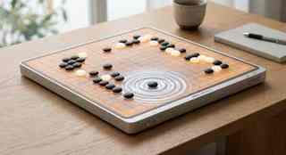
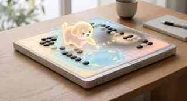
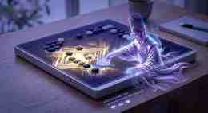
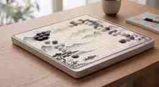

身体知
紙の上に残る線ではなく、線を生む身体の記憶に注目する。
01 / Profile ・ About Me
書道の身体知とデジタルテクノロジーをつなぎ、呼吸や記憶を感じられる インタラクションを考えています。

About / Curiosity
私は「人間の身体認知とデジタルテクノロジーの交差点」に強い好奇心を抱いています。 無機質な画面を増やすよりも、伝統的な暗黙知や感覚記憶を AI と結びつけ、 生命力のある体験へ変換することに惹かれています。
書道で学んだのは、線の美しさだけではありません。筆圧、呼吸、筋肉の緊張、 迷いながら進む時間。その言葉にしにくい身体感覚こそ、デジタル時代にもう一度 丁寧に扱うべきものだと考えています。
紙の上に残る線ではなく、線を生む身体の記憶に注目する。
効率だけでなく、寄り添い、学び、安心感を支える AI を考える。
伝統、遊び、感情、技術を並べ直し、新しい体験の形を探る。
Projects / Experiments
Project 01
墨韻とアルゴリズムの共生
アニメ『ヒカルの碁』をきっかけに囲碁へ興味を持ちました。初心者にも 「藤原佐為」のように寄り添い、導いてくれる存在があれば、抽象的なルールは もっと開かれた遊びになる。その思いから、和紙のような温もりを持つ家庭用 スマート AI 碁盤を構想しました。


幼児向けに、ペットのような存在が長考を楽しい探究へ変える。

情緒的な支えと技術的な振り返りを組み合わせるデジタルメンター。

水墨の動きで静かに寄り添い、シニア層の認知負荷を下げる。
Project 02
暗黙の身体知が拓くデジタルの未来
書道は、紙に残された黒い軌跡だけではありません。筋肉、呼吸、心境、時間が 同調した身体の知です。AI が容易に生成できる時代だからこそ、言葉にしにくい 感覚をどう記録し、伝え、進化させるかを探求しています。
Why Chaos Camp
東大カオスキャンプでは、ひとつの専門に閉じない対話の中で、身体感覚、AI、 伝統文化、学習体験を横断して考えたいです。効率化だけでは見落とされる 「温度」や「余白」を、次のインターフェースの材料として扱えるのではないか。 その問いを、異なる視点を持つ人たちと一緒に深めたいと考えています。
Contact
身体知、AI、インタラクション、伝統文化の交差点に関心があります。 対話や共同制作のきっかけがあれば、ぜひ声をかけてください。